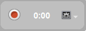

Registra la tua lezione
OpenBoard permette di registrare audio e video della tua lezione. Ideale per condividere esercizi aggiuntivi, pubblicare un breve video esplicativo o mettere una lezione a disposizione degli studenti assenti.
Accedere allo strumento di registrazione
Apri lo strumento di cattura come mostrato qui sotto:

Interfaccia di controllo
L'interfaccia appare in basso a destra della lavagna:

Fai clic sul pulsante rosso per avviare la registrazione.
Terminare e recuperare il video
Una volta terminata la registrazione, il video viene automaticamente salvato sul Desktop del tuo computer.